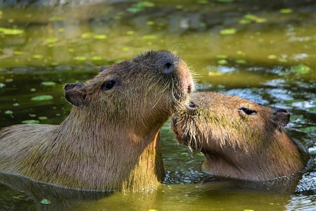
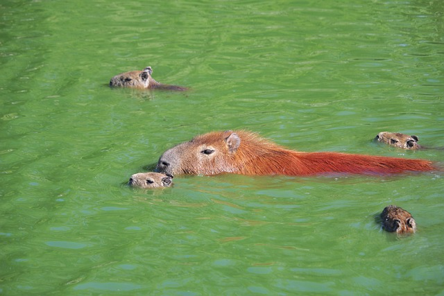
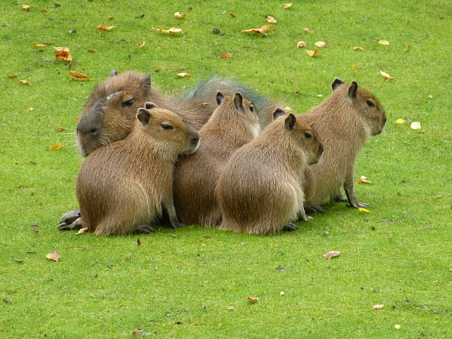

O kapibarach
Kapibary (Hydrochoerus hydrochaeris) to największe gryzonie na świecie. Są znane ze swojego spokojnego charakteru i towarzyskiego zachowania.Kapibary to zwierzęta wielofunkcyjne, które potrafią przystosować się zarówno do życia na lądzie, jak i w wodzie. Woda jest dla nich nie tylko źródłem pożywienia, ale także stanowi środek obrony przed drapieżnikami.Kapibary żyją w grupach, które mogą składać się z kilku do kilkunastu osobników. Te społeczności są zazwyczaj zorganizowane w hierarchiczny sposób, z dominującym parą lub paroma osobnikami.

Życie w naturalnym środowisku
Kapibary występują głównie w wilgotnych obszarach Ameryki Południowej, a ich naturalne środowisko obejmuje różnorodne obszary wodne i trawiaste, takie jak rzeki, stawy, bagienne tereny oraz otaczające je lasy i zarośla.Kapibary często napotykają na zmiany w swoim naturalnym siedlisku z powodu działalności człowieka, takie jak wycinka lasów, osuszanie bagien czy urbanizacja. To stawia je wobec wyzwań związanych z utrzymaniem swojego naturalnego środowiska.
Interesujące fakty
- Kapibary są bardzo towarzyskie i żyją w grupach.
- Mogą osiągnąć masę ciała do 70 kg.
- Kapibary są częścią rodziny gryzoni kawiowatych (Caviidae) i są spokrewnione z morskimi świnkami i innymi gatunkami.
- Kapibary są roślinożercami i żywią się głównie trawą i innymi roślinami wodnymi.
- Kapibary są znane ze swojego spokojnego charakteru. Często można je obserwować leżące na brzegu rzeki lub w wodzie, gdzie odpoczywają i opalają się.
- Są wodnymi zwierzętami i świetnie pływają.
|  |  |